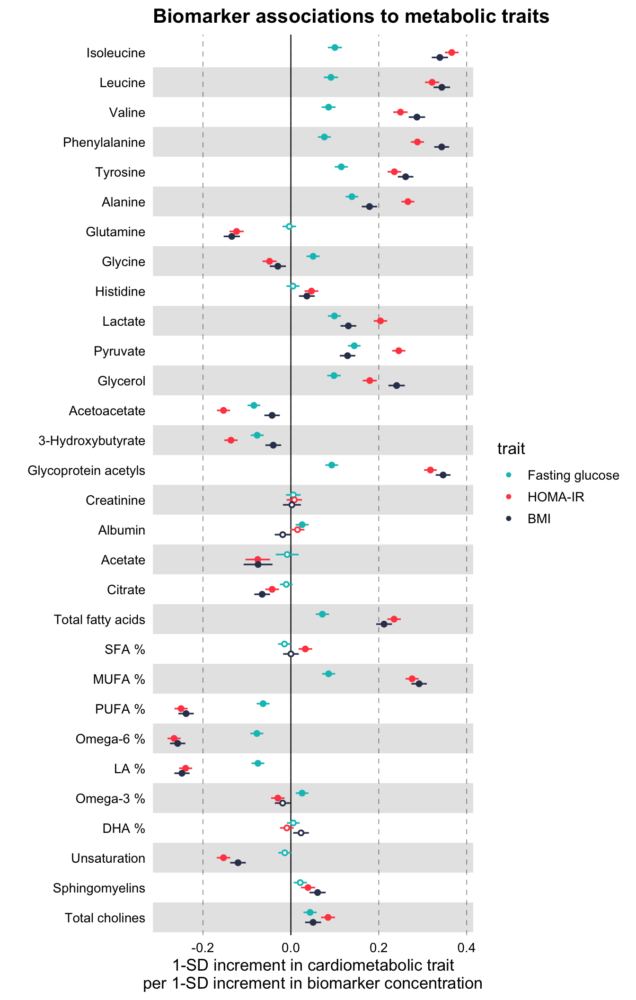

Using ggforestplot
Nightingale Health Ltd.
2019-03-09
Source:vignettes/ggforestplot.Rmd
ggforestplot.RmdOverview
The R package ggforestplot allows to plot vertical forest plots, a.k.a. blobbograms, and it’s based on ggplot2.
In this tutorial we will go through its basic functionality, as well as how one can produce grouped plots, using demo data from Nightingale’s NMR platform.
Installation
You can install ggforestplot from github as shown below (unless already installed, you need to install devtools first):
# install.packages("devtools")
devtools::install_github("NightingaleHealth/ggforestplot")Usage
The main plotting function is ggforestplot::forestplot(). It’s main input is a data frame that contains the values and corresponding standard errors to be plotted in a forestplot layout.
Let’s get right to it and plot an example before with delve into the details of the input parameters.
# Load and attach the package
library(ggforestplot)
# Load and attach other useful packages
# install.packages("tidyverse")
library(tidyverse)
# Filter only associations to BMI for the first 30 biomarkers of the example
# dataset
df <-
ggforestplot::df_linear_associations %>%
filter(
trait == "BMI",
dplyr::row_number() <= 30
)
# Draw a forestplot of cross-sectional, linear associations
ggforestplot::forestplot(
df = df,
name = name,
estimate = beta,
se = se
)
These are the linear associations of BMI to 30 blood biomarkers - selected somewhat randomly - along with their 95% confidence intervals.
Now let’s take a closer look at the example dataset used above in order to understand what is the input that ggforestplot::forestplot() expects.
The dataset ggforestplot::df_linear_associations is a tibble() and contains linear associations of blood biomarkers to Body Mass Index (BMI), insulin resistance (log(HOMA-IR)) and fasting glucose as found in A. V. Ahola-Olli et al. (2019). Below are the first 10 rows.
# Linear associations of blood biomarkers to Body Mass Index (BMI), insulin
# resistance (log(HOMA-IR)) and fasting glucose
ggforestplot::df_linear_associations %>%
print()
#> # A tibble: 681 x 5
#> name trait beta se pvalue
#> <chr> <chr> <dbl> <dbl> <dbl>
#> 1 Isoleucine BMI 0.339 0.00945 1.11e-281
#> 2 Leucine BMI 0.343 0.00951 1.25e-285
#> 3 Valine BMI 0.287 0.00951 7.94e-200
#> 4 Phenylalanine BMI 0.343 0.00862 0.
#> 5 Tyrosine BMI 0.261 0.00900 6.65e-185
#> 6 Alanine BMI 0.179 0.00890 8.62e- 90
#> 7 Glutamine BMI -0.134 0.00945 7.68e- 46
#> 8 Glycine BMI -0.0296 0.00937 1.56e- 3
#> 9 Histidine BMI 0.0364 0.00917 7.25e- 5
#> 10 Lactate BMI 0.131 0.00911 9.20e- 47
#> # … with 671 more rowsThe variables, as also stated in the documentation, are:
-
name: the names of the Nightingale serum biomarkers (Note: glucose is missing as the results are adjusted for this biomarker). -
trait: the response variable of the regression model, BMI, log(HOMA-IR) or fasting glucose. -
beta: regression coefficient \(\beta\). -
se: standard deviation -
pvalue: p-value
So the first input parameter for forestplot() must be a data frame with at least the variables name (character), estimate (numeric) and se (numeric), which of course may be named differently.
Adding information on statistical significance
Let’s now start improving the plot above.
First, we need a more descriptive x axis label and we may also add a title. We’d also like to visualize a Bonferroni correction to account for multiple testing. Here we have a comparison of 30 biomarkers. If we suppose the common significance threshold \(\alpha = 0.05\), the Bonferroni correction for each individual hypothesis, assuming the 30 tests are independent, is \(\alpha = 0.05 / 30 \approx 0.002\) (Note: in fact for biologically correlated measures this correction is too strict; here we could, for example, perform a principal component analysis and instead of the number of biomarkers we’d choose the number of principal components that explain a fair amount of variance in the metabolic data, e.g. 99%; see also vignette("nmr-data-analysis-tutorial").
In the forestplot function, we will input the significance threshold as the parameter psignif and we will define explicitly the variable name in df that contains the p-values of the linear regression, in this case the column pvalue.
# Draw a forestplot of cross-sectional, linear associations
# Add a more descriptive x-label, a title and the threshold for statistical
# significance with Bonferroni correction.
# (Note that the df variable names 'name', 'beta' and 'se' do not really have to be
# explictly defined, as these are the default input values of these parameters.)
ggforestplot::forestplot(
df = df,
estimate = beta,
pvalue = pvalue,
psignif = 0.002,
xlab = "1-SD increment in BMI\nper 1-SD increment in biomarker concentration",
title = "Associations of blood biomarkers to BMI"
)Notice how the non-significant results are now displayed as hollow points.
Comparing several traits
Let us now go ahead and plot, along with the BMI, the associations with insulin resistance (HOMA-IR) and fasting glucose.
# Extract the biomarker names
selected_bmrs <-
df %>%
pull(name)
# Filter the demo dataset for the biomarkers above and all three traits:
# BMI, HOMA-IR and fasting glucose
df_compare_traits <-
ggforestplot::df_linear_associations %>%
filter(name %in% selected_bmrs) %>%
# Set class to factor to set order of display.
mutate(
trait = factor(
trait,
levels = c("BMI", "HOMA-IR", "Fasting glucose"))
)
# Draw a forestplot of cross-sectional, linear associations
# Notice how the df variable 'trait' is used here to color the points
ggforestplot::forestplot(
df = df_compare_traits,
estimate = beta,
pvalue = pvalue,
psignif = 0.002,
xlab = "1-SD increment in cardiometabolic trait\nper 1-SD increment in biomarker concentration",
title = "Biomarker associations to metabolic traits",
colour = trait
) 
Grouping the biomarkers
Finally, we would like to group the blood biomarkers by category to improve the readability of the plot.
The package includes also a data frame, ggforestplot::df_NG_biomarker_metadata, with metadata on the Nightingale blood biomarkers, such as different naming options, descriptions, group/sugroup information and units of measurement. We will use the grouping information in this data frame to plot the 30 biomarkers above in a grouped layout.
We can acheive this by joining the biomarker metadata with the data frame df_compare_traits above, that contains the associations. We will then use a combination of the functions tidyr::nest() and purrr::map2() in order to run the forestplot function for each of the groups separately. Finally, we will use the patchwork::wrap_plots() functions to assemble the final forestplot. The steps to do this are shown below.
# Install and attach the patchwork library
# devtools::install_github("thomasp85/patchwork")
library(patchwork)
# Filter df_NG_biomarker_metadata, that contain the groups, for only the 30
# biomarkers under discussion
df_grouping <-
df_NG_biomarker_metadata %>%
filter(name %in% df_compare_traits$name)
# Join the association data frame df_compare_traits with group data
df_compare_traits_groups <-
df_compare_traits %>%
# use right_join, with df_grouping on the right, to preserve the order of
# biomarkers it specifies.
dplyr::right_join(., df_grouping, by = "name")
# Draw a forestplot of cross-sectional, linear associations.
ggplot_multi <-
df_compare_traits_groups %>%
nest(-group, .key = "data") %>%
# Apply forestplot to each group
mutate(
gg_groups = purrr::map2(
data, group, ~ forestplot(
df = .x,
estimate = beta,
pvalue = pvalue,
psignif = 0.002,
xlab = "1-SD increment in cardiometabolic trait\nper 1-SD increment in biomarker concentration",
colour = trait,
title = .y
) +
ggplot2::coord_cartesian(xlim = c(-0.3, 0.4))
),
# Optional: remove x-axis and legend for all plots except the bottom one
gg_groups = ifelse(
test = row_number() != n(),
yes =
purrr::map(gg_groups, ~ . +
theme(
axis.text.x = element_blank(),
axis.title.x = element_blank(),
axis.ticks.x = element_blank(),
plot.margin = unit(c(1, 2, 1, 2), "mm")
) +
ggplot2::theme(legend.position = "none")),
no = gg_groups
),
rel_heights = purrr::map(
data, ~ nrow(.)
) %>% unlist()
)
patchwork::wrap_plots(
ggplot_multi$gg_groups,
ncol = 1,
heights = ggplot_multi$rel_heights
)
Notice above, how the order of the biomarkers is now different than in the previous plots. This is the order of groups and biomarkers in df_grouping.
# Print the first 10 rows of df_grouping to inspect the order of biomarkers
df_grouping %>%
pull(name) %>%
print()
#> [1] "Total cholines" "Sphingomyelins" "Total fatty acids"
#> [4] "Unsaturation" "Omega-3 %" "Omega-6 %"
#> [7] "PUFA %" "MUFA %" "SFA %"
#> [10] "LA %" "DHA %" "Alanine"
#> [13] "Glutamine" "Glycine" "Histidine"
#> [16] "Isoleucine" "Leucine" "Valine"
#> [19] "Phenylalanine" "Tyrosine" "Lactate"
#> [22] "Pyruvate" "Citrate" "Glycerol"
#> [25] "Acetate" "Acetoacetate" "3-hydroxybutyrate"
#> [28] "Creatinine" "Albumin" "Glycoprotein acetyls"Another note is that we had to define manually a common axis for all the plots. For that we added the layer ggplot2::coord_cartesian(xlim = c(-0.3, 0.4)) in each forestplot() call. In order to know, a priori, what is the correct common x limits you are looking for, you need to estimate the confidence intervals from the standard errors. In practice however, you may simply run the above piece of code twice, once without setting x limits and, after visual inspection, rerun adding ggplot2::coord_cartesian(xlim = c(xmin, xmax)).
Finally, the implementation above removes x-axis texts and labels for each group. You may want to comment that out depending on how long is your column of forestplots but, at least, keep axis.text.x for only the last plot.
Plotting odds / hazard ratios
The package includes also a second demo dataset from the same paper, ggforestplot::df_logodds_associations, with log odds ratios of blood biomarkers with incident type 2 diabetes. The beta, se and pvalue variables in this set are the result of logistic regression and the additonal n variable reports the cohorts sample size.
# Odds Ratios of Blood Biomarkers with Incident Type 2 Diabetes
ggforestplot::df_logodds_associations %>%
print()
#> # A tibble: 1,135 x 6
#> name study beta se pvalue n
#> <chr> <chr> <dbl> <dbl> <dbl> <dbl>
#> 1 Isoleucine Meta-analysis 0.285 0.0500 0.0000000126 11777
#> 2 Leucine Meta-analysis 0.286 0.0506 0.0000000165 11783
#> 3 Valine Meta-analysis 0.182 0.0558 0.00110 11777
#> 4 Phenylalanine Meta-analysis 0.271 0.0538 0.000000453 11782
#> 5 Tyrosine Meta-analysis 0.168 0.0541 0.00189 11779
#> 6 Alanine Meta-analysis 0.122 0.0540 0.0237 11784
#> 7 Glutamine Meta-analysis -0.172 0.0575 0.00284 11744
#> 8 Glycine Meta-analysis -0.0773 0.0617 0.211 11496
#> 9 Histidine Meta-analysis 0.0473 0.0553 0.393 11777
#> 10 Lactate Meta-analysis 0.119 0.0529 0.0245 11781
#> # … with 1,125 more rowsWe will use this dataset to demonstrate how to plot odds ratios (the same logic applies for hazard ratios).
The dataset includes log odds ratios with incident type 2 diabetes for a total of 4 cohorts plus the meta-analysis we saw above. Let’s plot the odds ratios for amino acids.
# Filter df_NG_biomarker_metadata for only amino acids
df_grouping <-
df_NG_biomarker_metadata %>%
filter(group %in% "Amino acids")
# Join the association data frame with group data
df <-
df_logodds_associations %>%
# Set the study variable to a factor to preserve order of appearance
mutate(
study = factor(
study,
levels = c("Meta-analysis", "NFBC-1997", "DILGOM", "FINRISK-1997", "YFS"))
) %>%
# use right_join, with df_grouping on the right, to preserve the order of
# biomarkers it specifies.
dplyr::right_join(., df_grouping, by = "name")
# Draw a forestplot of odds ratios
ggforestplot::forestplot(
df = df,
name = name,
estimate = beta,
se = se,
pvalue = pvalue,
psignif = 0.002,
colour = study,
xlab = "Odds ratio for incident type 2 diabetes (95% CI)\nper 1−SD increment in metabolite concentration",
title = "Amino acids",
logodds = TRUE
)
Notice that the additional parameter set here is logodds = TRUE. What happens, in this case, is that the beta values are exponentiated and plotted in a logarithmic scale. The confidence intervals for the odds ratios are estimated by default, using the standard errors of the log odds ratios, as follows \(\text{CI}_\text{low} = \exp(\beta - 0.95 * \text{SE})\) and \(\text{CI}_\text{high} = \exp(\beta - 0.95 * \text{SE})\). If you wish to use some confidence interval other than the 95%, you may specify this in the parameter ci of the function (see below).
Additionally, you may set a scale_shape_manual(). For example, a common convention is to plot meta-analysis results with a diamond shape.
# Draw a forestplot of odds ratios
ggforestplot::forestplot(
df = df,
name = name,
estimate = beta,
se = se,
pvalue = pvalue,
psignif = 0.002,
colour = study,
shape = study,
xlab = "Odds ratio for incident type 2 diabetes (95% CI)\nper 1−SD increment in metabolite concentration",
title = "Amino acids",
logodds = TRUE
) +
ggplot2::scale_shape_manual(
values = c(23L, 21L, 21L, 21L, 21L),
labels = c("Meta-analysis", "NFBC-1997", "DILGOM", "FINRISK-1997", "YFS")
)
#> Scale for 'shape' is already present. Adding another scale for 'shape',
#> which will replace the existing scale.
Finally, the ggforestplot package offers a custom function that plots and prints in a 2-page pdf file all Nightingale blood biomarkers, namely plot_all_NG_biomarkers(). It’s usage is straightforward.
# Join the built-in association demo dataset with a variable that contains
# the machine readable names of Nightingale biomarkers. (Note: if you
# have built your association data frame using the Nightingale CSV result file,
# then your data frame should already contain machine readable names.)
df <-
df_linear_associations %>%
left_join(
select(
df_NG_biomarker_metadata,
name,
machine_readable_name
),
by = "name")
# Print effect sizes for all Nightingale biomarkers in a custom 2-page pdf
plot_all_NG_biomarkers(
df = df,
machine_readable_name = machine_readable_name,
estimate = beta,
se = se,
pvalue = pvalue,
colour = trait,
filename = "biomarker_linear_associations.pdf",
xlab = "1-SD increment in BMI\nper 1-SD increment in biomarker concentration"
)You may view the output of this function here